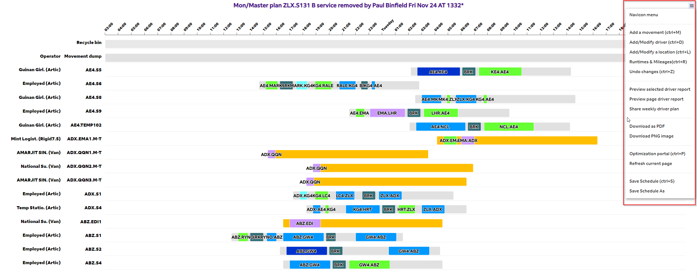

Navicon¶
This part of the document describes the functionalities available via the navigation bar. This bar is known by several names including Navicon, Hamburger, Menu icon, and List menu, and is located on the drag and drop chart.
{kind=link}
Add a Movement (CTRL+M)¶
Upon selecting the option labeled
Add a Movement (CTRL+M), or using the shortcut (CTRL+M) in Google Chrome, a popup window will appear. This window is designed for creating either movement(s) or changeovers. The created movement(s) will then appear in the Movement dump area.
{kind=link}
- Loc String: To create a movement, the user inputs the origin and destination location codes, as well as departure time in
hhmmformat, separated by a dot (.). Moreover, a departure day, being 0 or 1, has to be selected from the corresponding drop-down list. For instance, to create a movement from Kingsbury to Preston which departs next day at
01:00 AM, user should inputKG4.PN4.0100, where KG4 represents the location code for Kingsbury and PN4 for Preston, and select 1 fromDepDaydrop-down list. For user convenience, location codes can be easily found using the location lookup drop-down list: just search for the city or location name and the loc_code - location name will appear in the list if exists in LION. Upon clicking on the location, it will be appended to the existing string in Loc String entry.
- Loc String: To create a movement, the user inputs the origin and destination location codes, as well as departure time in
Select a
Traffic Type: Next to the Loc String entry is Traffic Type drop down list is present. The default option isExpress.Select a
Vehicle Type: For every movement, a vehilce type has to be selected from the vehicle dropdown list.Select a
TU Dest: If the movement has a TU Destination other than it is destnation, it has to be specified in the TU Dest field; otherwise, this field can be left blank.Multi-leg movements: In order to create multi-leg movements, i.e., changeovers Changeover, user can insert, e.g.,KG4.PN4.GLA.0100, in the loc_string field. This will create a movement from Kingsbury to Preston and then to Glasgow. Please note that the TU Dest field does not have to be populated for changeovers as the TU destination is the same as the destination of the last leg.
{kind=link}
{kind=link}
Add/modify driver (CTRL+D)¶

This portal can be used to add a new shift or modify an exsiting shift details.
Create a new shift A new shift can be created as follows:
Select a name for the shift under ShiftName
Choose a control station from the list of station codes.
Choose the shift operator: an external third-party or an internal employee, from the provided options. If the oprator does not exist, use New operator field
Specify the shift’s starting location. If it matches the control station, you can leave this blank.
Select a vehicle for the shift from the available options. Note: The vehicle type is assumed to be constant during the shift.
Choose the weekdays for the shift from the available options.
If the shift requires two operators, enable the Double-man option.
Enable the Home-Base option if the driver should return to the starting location at the end of the shift.
Click the Save button to add a new shift to the current schedule. Remember, if loaded schedule day is not one of the selected running days, the shift won’t appear right-away. You’ll need to view a schedule for a day when the shift is active to find the newly added shift.
Modify an existing shift A new shift can be created as follows:
To alter an existing driver/shift, right-click on the desired shift and choose View/Modify driver info. The driver’s details will be displayed in the respective fields. You can change any information by selecting a new option for each field. To rename a shift, utilize the Rename to field. To remove a shift from the schedule, select the specific weekdays for the shift deletion, then click the
Deletebutton.
{kind=link}
Add/modify location (CTRL+L)¶
Add a new location
Select the Add/modify a location option to access the location portal.
Type your postcode (case sensitive) into the Postcode box. If desired, hit the
Get eGIS coordsbutton to pull Geocodes. However, it’s highly advised to verify these coordinates on Google Maps for accuracy. This will populate Latitude and longitude field, i.e., Lat/Lon, which is required when calculating runtimes and mileage as well as displaying locations on the mapFill in the Location code field with the location code that has been established and configured in ROCS.
In the Location name field, enter the name of the location corresponding to the given location code. Ensure this name aligns with the data in ROCS.
Choose a location type from the provided dropdown menu options.
Designate a controlling location (station) for the new location. This aspect is mainly relevant for customers.
Make sure the field Lat/Lon is properly completed. Consulte Latitude and longitude to learn how to get these numbers
Specify the city/town where the location is located.
Specify the driving and non-driving turnaround-time at this location respectively as follows: if driving turnaround-time at a AE4 (Atherstone Road Hub) is 10 minutes and non-driving turnaround-time is 15 minutes, enter 10,15 in this field
Make sure the field dep/arr debrief minutes (30, 30) is properly populated. By default, departure and arrival debrief time are set to 30 minutes. Please note that debrief time is considered as “Working” hours. Consulte Debrief time to learn more.
Once ready with all details, you can press
Save locationto save/update the location data.Deactivate a location: If you want to deactivate a location, first select the location from the drop down list and then press
De/activatebutton.Modify an existing location
{kind=link}
{kind=link}
Runtimes and Mileages (CTRL+R)¶
This portal is used to extract runtimes and mileages from eGIS system (VPN).
(Re)Calculate Runtimes and Mileages for a List of Locations: When introducing new locations such as customers, or after the relocation of an existing FedEx facility or customer, it’s crucial to (re)calculate runtimes and mileages to and from these affected locations. For this process:
Ensure that the locations have been properly set up or modified through the Add/Modify Location portal and that the changes are reflected in the system.
Use the Location drop-down menu to choose all the locations affected in order to compute the runtimes to and from these points.
Utilize the Location Type drop-down menu to select the types of locations for which you want to (re)calculate runtimes and mileages. If you need to consider all inbound and outbound lanes, you can skip this step (just ensure no location type is selected).
Enable
Overwrite Existing Lanesif you’re recalculating runtime data for relocated locations or customers. If not activated, your newly calculated runtime data might not be considered.Click the
Generate eGIS Input Databutton to produce the lane data for the eGIS application.After receiving notification that the input data is ready, proceed by clicking the
Execute eGISbutton to generate the runtime and mileage data.Following the data generation, click the
Import eGIS Runtimesbutton to upload the data into LION. In some cases, a system reboot may be necessary to view the updated or new data.
- Retrieve Runtimes and Mileages for Single or Few Lanes: To obtain runtime and mileage details,
as provided in LION,for a single lane or a small number of lanes, use the input field loc_strings (e.g., DZ5.KG4;CY4.ZLX). This facilitates queries such as seeking runtimes and mileages for lanes DZ5 to KG4 and CY4 to ZLX. Simply enter DZ5.KG4;CY4.ZLX in the designated input area and press the
Extract runtimes databutton. The resulting data will be placed in the directory%OneDrive%\\eGIS_PE\\user\\<Your_USER_NAME>\\output\\eGIS_Runtimes.csv.
- Retrieve Runtimes and Mileages for non-existing lanes: To obtain runtime and mileage between two locations of which at least one
is not setted up in LION, use the input field Geocode/postcode string (‘;’ seperated):. This module retrieve data directly from eGIS and displays on a popup message. As an example, to obtain runtime and mileage from
The Royal Hotellocated at High Street, Purfleet RM19 1QA, United Kingdom, to one of FedEx Express facilities in the UK, e.g., Kingsbury Road Hub (location code: KG4), open Google map and search for the The Royal Hotel and zoom in until you are happy with the location. Then Right-click on the spot and then click on the top option in the drop-down list to copy Latitude and Longitude:Then, paste the copied coordinates in Geocode/postcode string (‘;’ seperated) input area. Then seperate these codes from KG4 by ‘;’, and click the Extract runtimes data button to retreive data:
{kind=link}
{kind=link}
{kind=link}
Preview page driver report¶
Displays weekly driver report for the shifts available on the current page. If you want to view weekly driver plan for a subset of shifts from multiple locations or pages, you can use LION Search portal to find the corresponding shifts, right-click and add to basket, and, once done with consolidation, Load basket to display them in a single page then select Preview page driver report to view the weekly plan.
Export page driver plan¶
Exports driver report for the shifts available on the current page in PDF format. If you want to export driver plan for a subset of shifts from multiple locations or pages, you can use LION Search portal to find the corresponding shifts, right-click and add to basket, and, once done with consolidation, Load basket to display them in a single page then select Export page driver plan to export the driver plan to the following directory:
C:\\Users\\<Your_LDAP>\\LION_HOME\\DriverReport\\<LOADED_SCHEDULE_NAME>
{kind=link}
This means that these reports will not directly published or shared. You can use email attachment (for less than 25MB), or Sharepoint to manually distribute the reports.
Export driver plan¶
Exports driver report for the selected weekdays in PDF format
{kind=link}
to the following directory:
C:\\Users\\<Your_LDAP>\\OneDrive - MyFedEx\\LION_SHARED_DIR\\LION Reports\\Driver plan WKxx
It is important to note that the directory LION Reports gets cleaned up on a monthly basis, which means that the generated reports will be deleted around 30 days after creation.
Sometimes user may want to export the consolidated driver plan for the entire week which is in MS Excel file.
To this end, user can switch pdf report off. This will generate the driver plan in MS Excel format in the following directory.
C:\\Users\\<Your_LDAP>\\LION_HOME\\DriverReport
Optimization portal (CTRL+P)¶
{kind=link}
This portal is used to (re)build a driver schedule out of a given set of loaded movements.
Step 1: Export or prepare input loaded movements: To start, user can export the set of weekly movements by clicking the Extract movements button. The file
movements.xlsmwill be generated in the following directory:C:\\Users\\<Your_LDAP>\\LION_HOME\\OptimizationThe scope of optimisation is all unfixed Artic (Articulated truck or Tractor-trailer 2/3 Axles) movemenets. This means that the out-of-scope movements will not be included in
movements.xlsm.This file includes a list of fields that are documented. However, for the purpose of constructing a new set of movements, not all of these fields are mandatory:
loc_string (optional): A string is constructed based on the origin, destination, and departure time of a movement. Therefore, if a movement departs from KG4 at 14:00 on Tuesday and is heading to ADX, its loc_string would be KG4.ADX.1400. Note that the content of this field must be either a valid loc_string or should be left blank. This is a mandatory field but if left blank.
From (mandatory): Origin location code of a movement
To (mandatory): Destination location code of a movement
tu (optional): This field will be the TU Destination for a Changeover. Please note that this field is compulsory for changeovers.
DepDay (mandatory): Represents the numerical value of the departure day in relation to the scheduled day. For example, if a service is scheduled for Monday and departs on Monday, then DepDay=0. However, if it departs on the following day, like Tuesday at 01:45 AM, then DepDay=1.
DepTime (mandatory): Denotes the departure time of a movement using a 24-hour format. For example, 10:00 PM should be entered as
2200or0100.Mon, Tue, …, Sun (mandatory): These fields idicate the weekdays a movement runs.
TrafficType (optional): Traffic Type of the movement. If left blank, the field will be set to Express.
VehicleType (optional): This parameter specifies the type of vehicle involved in the movement. It’s important to note that the default value is Articulated Truck when this field is not filled. However, if you specify a vehicle type other than Articulated Truck, that particular movement will be
excludedfrom the optimisation process.Multi-leg movements: To construct a new changeover in
movements.xlsmfile, all you need to do is to enter key information for the first leg. For example, to create a changeover from Aberdeen to Park House via Glasgow, departing at 13:00, you enterset loc_string=ABZ.GW4.ZFC.1300
set From=ABZ
set To=GW4
set tu=ZFC
set DepDay=0: when building a changeover which departs on day 0, DepDay=0 but if it departs next day, e.g., 01:45 AM, then DepDay=1
set DepTime=1300
Please note that LION will use the default value of 15 minutes for BufferTime between two movements of the changeover. Moreover, all existing changeovers, including underlying movements, in LION will be deleted. If you want to keep the existing changeovers, you have to manually add them to the new movements file.
Testing ideas: As a general rule, to quickly test new ideas and assess their impact before conducting a thorough study, you can follow these steps:
Filter for a Single Day’s Schedule: For example, use Wednesday.
Set Light Parameters: Choose reasonable values for maximum empty movement duration and downtime between consecutive loaded movements, such as setting both to a maximum of 90 minutes. Execution time with these params is about 15 minutes
Run Initial Optimization: Execute the optimization without implementing your idea. This may result in a high number of drivers (versus current schedule), but our goal is to understand the impact of the idea, not necessarily compare it to the current schedule.
Apply Your Idea: Use the options available in the optimization portal. If you need additional functionality, let me know, and I can build it for you.
Run Updated Optimization: Execute the optimization with your idea applied.
Compare KPIs: Assess the key performance indicators between the two runs.
The scenario with the better performance can then be applied with larger parameters and manual adjustments to achieve an final and optimized schedule.
{kind=link}
Prior to progressing to the subsequent phase, it’s essential to verify that the input data in movements.xlsm has been
accurately filled in. This includes ensuring that all movement details are correctly input and fields like times are properly completed.
Additionally, confirm that the changeovers have been properly configured. Once ready with the data, decide on a representative day
for optimization, e.g., Wed. Click on the radio-button corresponding the weekday before starting optimization to make sure you have loaded the
schdeule corresponding to the selected representative day before starting optimization. Optionally, user can set the parameters for the optimization days
by selecting the representative day in optimization days drop-down list.
In the case of testing various scenarions for mileages and runtimes, user can set a scenario using the Runtimes Data Set drop down list. The default scenario is Default.
Step 3: Run optimization: Run the
Optimizefunction to create an initial schedule using the parameters outlined below. It’s crucial to understand that the parameters Max empty movement duration (min) and Downtime between movements (min) significantly influence the runtime of the optimization process. Increased values for these parameters can extend the execution time, but generally lead to improved outcomes. Note that the upper limit for Max empty movement duration (min) is equal to Driving time before break (min). Setting Max empty movement duration (min) above this threshold is not advisable, as it could result in non-compliance with labor break time regulations.Max empty movement duration (min) (mandatory): Maximum Allowed Duration for Empty Movements in Schedule (minutes)
Downtime between movements (min) (mandatory): This parameter sets the maximum time duration (expressed in minutes) allowed for a driver to transition between trucks during planned transfers. This includes the timeframe from when the driver ceases operation of the initial truck to the start of operation of the subsequent truck. The intervening time is accounted as the driver’s available period at a specific location.
Shift duration (min) (mandatory): Legal a single shift duration in minutes
Legal driving time per driver (min) (mandatory): In compliance with legal regulations, the cumulative driving time for a driver within a single shift, inclusive of driving turnaround-time, must not surpass the specified limit. The prescribed default duration is set at 9 hours(540 minutes).
Working time before break (min) (mandatory): In adherence to legal requirements, a driver is eligible for a break when the total working hours within a single shift, encompassing both turnaround-time and any idle periods between movements, attain a predetermined threshold. The prescribed default working time before break is set at 6 hours (360 minutes).
Working time break (min) (mandatory): In adherence to legal requirements, a driver is eligible for a break when the total working hours within a single shift, encompassing both turnaround-time and any idle periods between movements, attain a predetermined threshold (see previous bullet point). The prescribed default break time is set at 30 minutes.
Driving time before break (min) (mandatory): In adherence to legal requirements, a driver is eligible for a break when the total driving hours within a single shift, including driving turnaround-time, attain a predetermined threshold. The prescribed default maximum driving time before break is set at four hours and thirty minutes (270 minutes).
Driving Break time (min) (mandatory): In adherence to legal requirements, a driver is eligible for a break when the total driving hours within a single shift, including driving turnaround-time, attain a predetermined threshold. The prescribed default driving break time is set at 60 minutes.
Double-man shift dur (min) (mandatory): This parameter sets duration of a double-man shift, i.e., Shift duration when a shift is executed by two drivers. Note that under this circumstances, some rules such as break time and maximum driving time can be relaxed.
Vehicle (mandatory): This parameter is used to set the scope of optimization. Currently, only unfixed Artic movements are in optimization scope.
Apply maximum resources per loc: Given the presence of maximum number of resources (drivers) available per location, user can enable this feature to instruct LION to limit the number of drivers used per location based on the information specified in
Resource.xlsxfile. The file must be available at the following folder:C:\\Users\\<Your_LDAP>\\LION_HOME\\OptimizationHere is the file structure and format:
if this feature is deactivated, then LION will ignore the total number of drivers per location specified in
Resource.xlsxand will be flexible in assiging drivers to these locations. It is important to note that no other location than those indicated in this file will be used as a driver location. If user decides to evaluate a location not listed inResource.xlsx, he/she has to add the location code to the list.Locations with no driver: This field allows user to specify locations where no driver is available. This is useful when a list of locations are being evaluated for their impact on the schedule when no driver is available. Multiple locations can be selected from the drop-down list.
User loaded movements: Activate this feature to direct LION to utilize the input loaded movements provided in
movements.xlsm. Deactivating this feature means LION will rely on the existing schedule, already present in LION, as the input loaded movement set for optimization. Importantly, when this feature is active, all loaded movements will undergo recalculation according to the chosen Runtimes data set. Conversely, if this feature is inactive, recalculations will occur only for empty movements, and will also be based on the selected Runtimes data set.Refresh runtimes and mileages: Activate this feature to direct LION to recalculate runtimes and mileages for the existing movements before optimization. This feature applies to the case where User loaded movements has been deactivated and input loaded movements for optimization is directly taken from the schedule. If selected, the impacted movements will be reported using
C:\\Users\\<Your_LDAP>\\LION_HOME\\Optimization\\runtimes_scn_impacted_movements.xlsxfile.Schedule double-man movements: Enable this option to instruct the app to schedule movements longer than four and half hours with two drivers. This feature is particularly useful when a movement exceeds the maximum driving time allowed for a single driver. When this feature is enabled, the system will automatically schedule the movement in a shift with two drivers to the movement, ensuring compliance with labor regulations.
Optimizing Driver Schedules: Balancing Automation with Expertise
Understanding the Automated Scheduling System LION is designed to streamline our operations, reducing manual labor and increasing efficiency. The automated system utilizes sophisticated algorithms to create driver schedules based on numerous factors, including availability, regulatory compliance, and resource optimization. However, it’s important to remember that this automation serves as a starting point. It’s based on predefined rules and cannot fully account for the nuances of day-to-day operations.
The Role of Manual Adjustments While our tool provides a strong foundation, your operational knowledge and expertise are invaluable in refining these schedules. Here’s how you can make the most of manual adjustments:
Drag-and-Drop Flexibility: The interface allows you to easily drag and drop movements into shifts. This feature enables you to consolidate more movements into fewer shifts, optimizing our resources effectively.
Instant Notifications: As you make adjustments, the system will provide instant notifications about any potential violations of labor rules. This real-time feedback helps you balance operational efficiency with regulatory compliance.
Empowering Decision-Making: You know your operation best. Use your judgment to make slight adjustments that respect labor regulations while also maximizing efficiency. Our tool is here to assist, but your expertise drives the ultimate decision-making.
Tips for Effective Manual Adjustments
Prioritize Key Movements: Focus on consolidating critical movements that can significantly impact your schedule’s efficiency.
Monitor Compliance Alerts: Pay attention to the notifications about labor rule violations. These alerts are there to guide you, but your discretion is key in deciding how to proceed.
Leverage Your Experience: Utilize your understanding of daily operations to make informed decisions that the automated system might not fully comprehend.
Remember: The automated scheduling system is a powerful tool, but it’s not infallible. Your experience and operational knowledge are essential in fine-tuning the schedules to best fit your unique needs. Use the automated schedule as a starting point, and employ the manual adjustment features to tailor the schedule, keeping a balance between efficiency and compliance.
{kind=link}
Toggle Labels¶
Hide or unhide labels on the chart
Toggle Map¶
Hide or unhide the map next to the drag and drop chart which can be used to visualise a selected tour. The map is by default hidden.
Toggle Zoom¶
The user has the option to enable or disable zooming on the chart. This feature is beneficial when movements are very small and obscured by labels or when labels are hard to read due to closely packed movements.